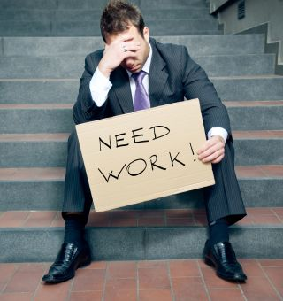

Linking project is an initiative by Sunny Allana based on bringing people closer to their rights i.e education, employment and healthy mentality.
In today's world with Covid-19 being around, too many people don't have access to education. Although there are free sources of education available on the internet through which they can broaden their skills. But the problem is they don't know about their existence or don't have enough resources to access them.
The suicide rate also seems to increase mainly because the current situation has a detrimental effect on human mind. Experts warn that a historic wave of mental-health problems is approaching: depression, substance abuse, post-traumatic stress disorder and suicide.
Countries have initiated lockdowns to stop the spread of Covid-19 and have asked people to work from home. Many people have lost their jobs because their work requires their presence at a certain location which has been made impossible.
Our role in this situation is to make people realize that every individual is an important asset of this world. Whether you are Rich or Poor, Black or White, Tall or Short,"YOU ARE A FORCE TO BE RECKONED WITH". This project will help you to gain new skills, reduce depression and to be a high value recruit for employers worldwide.